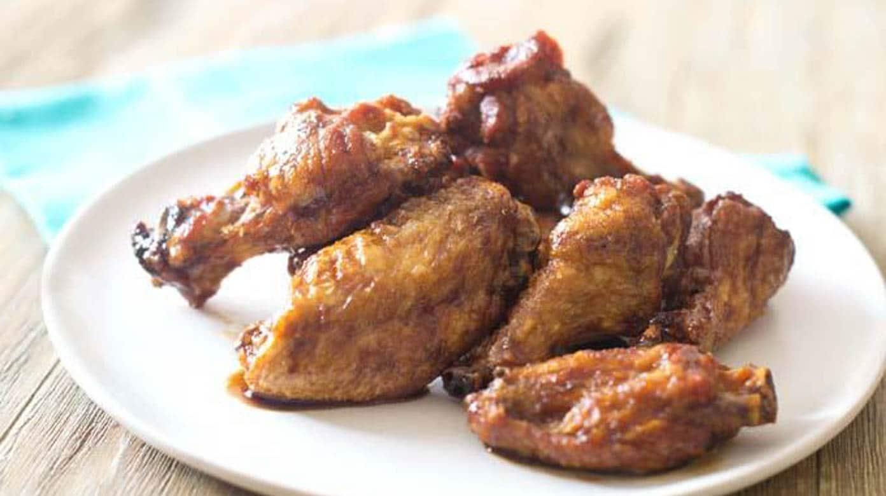

Wings

Description
Juicy, salty, and delicious. There is a reason people keep coming back to this classic American dish. Other cooking methods simply cannot compare to the all-encapsulating method of frying food in fat. Making wings is easy (if you can get past the not-so-easy method of frying) and you will not be disappointed.
Ingredients
- Sectioned Chicken Wings
- Oil for Frying (Canola, Peanut, Etc, something high smokepoint)
- Salt to taste
- A sauce or dry seasoning
- Buttermilk for brining (Optional. A Brine will greatly help the meaty be evenly seasoned and moist, but is not needed.)
Steps
- Pour oil into wok, or a heavy duty frying pot or pan. Oil should be enough to cover wings, although keep in mind you will only be frying about 5 at a time. Cook on medium-high heat.
- Season wings with salt. I recommend brineing in a bath of buttermilk and pickle juice or salt, but this is optional.
- Once oil is at *incert ideal frying temp* degrees, carefully drop in chicken by hand.
- Fry until skin is crispy, and meat is cooked through.
- Drop wings into a large bowl, and coat with sauce or seasonings. Toss to combine. Eat immediately, and no judgement if you eat from the bowl.
Return to main page